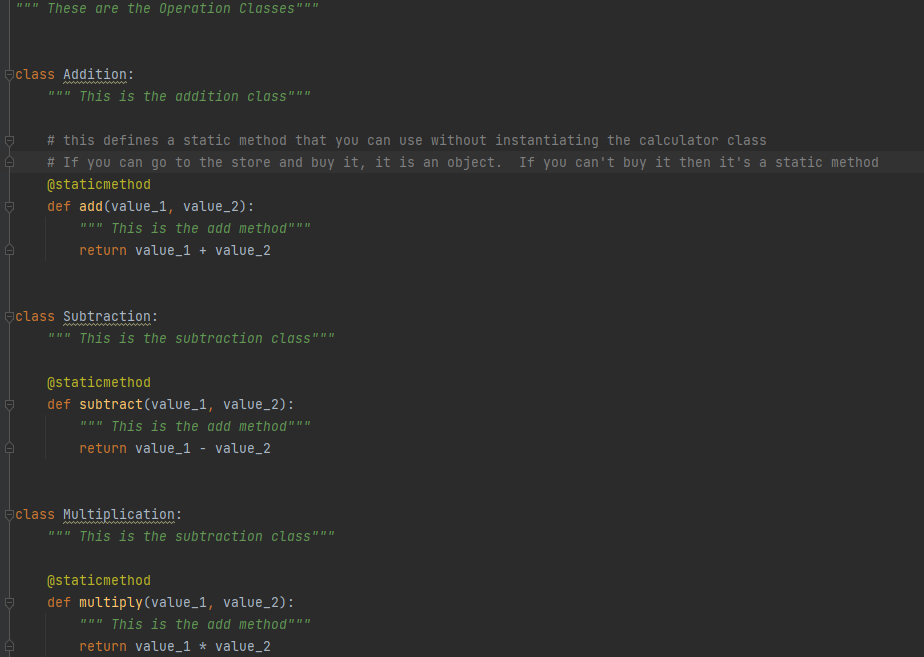
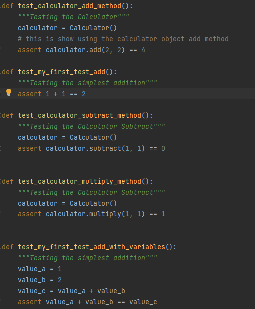

Object-Orientated Programming or OOP has these 4 terms that are extremely important in well-developed code:
We'll talk about each one and relate them back to the code and see how they are implemented.
I would like to use this calculator multiple times, not just one time and "cementing" the data on that instance, and I would love it if everything that I need for the
is included. I don't need to reach for anything related to my calculator outside my calculator class, everything is in the instance that I called for. That's the simple
way of explaining encapsulation to someone.
My Calculator class here:
We see here that calculator has all the functions that I want it to have: Addition, Subtraction and Multiplication. Within those methods, they all have their unique values, even if
they appear to be the same number. The user will use the numbers that they provided in that function and in that current instance (in this case). They would not know that when they
provide an 8 for value_1 for addition, it's completely different from the value_1 8 they provided for multiplication. It's both Abstraction and Encapsulation!
Now, I want to introduce you to the operations class.

You are probably wondering why didn't we have the Calculator class have all the operations and math done there instead of splitting them into their own class and methods. That approach comes
from SOLID which we will talk about in the next page. The part that I would like you to focus on is the self.result = part of each method in the calculator class and the actual
classes they are referenced from in the Operations class. The base class is still "Calculator" but the function needed is going to use the derived class Operations and then to the respected
function class the user wanted to use. The reason why we do this is, so we can keep using the function without having to type it every single time in other classes. We can simply import the class,
make the functions we want, inherit the respected class and use the function and store the result within the base calculator and let the derived class handle the work.
Let's take a look at the rest of the self.result= line, I'm going to use the Addition, but it holds true for all the operations. Addition.add(value_1, value_2) has two parts:
The class and the method that's being used. Anytime that the class referenced, you are able to use the same methods as if you were in the original class since creating an instance will pass over any
methods written within it. Think about making multiple addition programs, you would want them to have access to the same functions because realistically, they are the same program but another copy of it!
Polymorphism works exactly that. You can see another case of polymorphism in the example I used below for Abstraction, it's actually a better example since you can see it being made multiple times and use
the appropriate method that it needs.
Let's talk about a use case scenario for this application. Quickest way to show you is the Calculator test!
Whenever you want to use the calculator class, you would only want the user to only see and use the functions the way it was intended. The tests show an example of abstraction where the test case is something like I want to use and see the sum. Same thing with the methods as well. You don't want any calculator methods that isn't being used to be called whenever you use a function. This is why separating everything is important, so you can limit what a user sees without breaking intention of the application. Imagine how annoying it would be to see every time you want to add two numbers, you get the sum (which you want), the difference and product which are results that you don't want. Abstraction is important to understand and develop for users so that it can be used smoothly and efficiently.